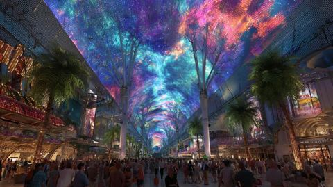
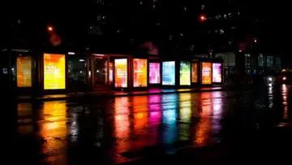
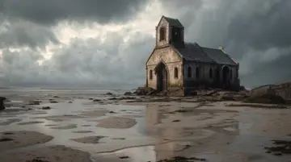

Where you go when you leave
Fourteen poems, one page each: the poem, the best of our footage, the cast with their kits, the props in every state, the places as layers, and every kit to generate.

Out of Life
A dim high-rise bedroom where a man reads a poem to a back that will not turn around: the EX on the fire escape, vaping, while the haze eats the room left to right and the window slides away from every step toward it. Then two bodies fall past streaking towers with a gap between them that breathes and never closes, through a slow-motion vintage party and a hole in its floor, until the only light left in the film is the vape ember, a blue speck on black.

Flashing Lights
A silent scream: a scream whose rings travel inward. The man floats in black while walls cave on him, wakes after midnight to a phone that rings twice and a mirror that answers his hand exactly, then his pupil opens and we go through it into a winter living room where he is six, a dead seven-year-old stands one pencil notch taller, his parents argue in a car with its hazards flashing, and he throws the tambourine she gave him through the glass.

How to break off an engagement
The tambourine thrown through the window in 02 tumbles through black and sails in through a chapel's rose window, still whole, into an empty temple: empty choir stands, empty prayer lines, a dry baptism pool. In time-lapse the cobwebs are built, the pews go, the wedding gifts left at the side doors are split by lightning, bread rots in the rain and blankets hang from puppet strings with nobody on them; then the storm lifts, two sets of mud footprints walk away out of step, and the tambourine finally lands on the shore and shatters.

Nevermore
One trail followed twice, each time ending in a body part taken back and sworn over. On a night shore of ash and tambourine pieces, a man in red and black with his hands in his pockets and a hollow chest finds his own heart throbbing in the sand; it floats up and re-enters him, and he says nevermore. He follows it up an incline into a moonlit garden where faith scatters as mustard seeds and golden blooms turn to face him, and in the deepest dark he finds his two hands palm-down on bare ground, puts them back on, stands, and says it again.

Bloodlines
Still night: the poet walks out of the Nevermore field into a parade of afro-futurist ancestors who put stars in his hands, and he names them one by one until they are a constellation of his kin. The same nine-point constellation comes back as the Southern-pine joists over the basement mattress he grew up on, as the veins of blood-light in his fingerprint, and as the veining in the marble wings of a gate that finally opens. It is a poem about inheritance getting bigger: a small man under a wide sky becomes a print too big for the frame, then a gate that runs off all four edges.

Resurrecting Atlantis
Generations walk a yellow-brick causeway out over black water toward a drowned city whose spire tips barely break the surface, while comets carry souls to the capital dome. The waterline falls once across the whole poem and the city comes up streaming, neon and vines on wet marble; the poet pays a glowing coin at the admission booth, walks candlelit narrow streets where music throws rainbows on the walls, and stands in the plaza while every window lights and a crowd raises its arms. It is the suite's one utopia: populated on purpose, and ending at the door of a house party.

DJ Turn Me Up
A full house party in an Atlantis house: the DJ drops onto the decks and scratches, and the poet, standing at the bar as in the part 1 reading video, eyes shut and chin pressed down under the weight of his words, tells the love story while a projection wall behind him shows it: ghosts walking out of a dying vineyard, two wedding bands drifting apart, a house trucked off down one-way streets, eleven petals plucked off a daisy, three roads. The whole poem is one climb in volume: starved at the start, turnt up at the end, chin high, the room erupting.

Newly Single
He leaves the party for an open-air rooftop club over Atlantis, all strobes and blue-pink light, where the dancers smear in shifted time and he stands still and empty. His soul, a glowing see-through copy of him, peels out and floats up, watches the whole city lit below, is set down on a white-hot plain at the equator of a giant planet, and is cooled by angels pouring ice baths; back in the club the same water lands on his body under the strobe. Haze fills the room, the soul comes home, he leans back and breathes it in, and ends on the ledge staring at far mountains, then walks out into a street where he glimpses the EX's back and cannot reach him.

Yet, Heard
Three calls made at the edge of a harbour before leaving: to the lover under a shared moon, to the mother over a black hole that opens in the water, to the father who walks out of the eastern sky. One night on one quay, and the light is the clock: moon high, the dead hour, first grey, the sun coming up out of the harbour mouth. Each call is a dashed line of light strung between two people, and behind every call the same breakup keeps playing on the sidewalk.

Magic Ride
Alone on the sidewalk after the breakup, the poet finds a motorcycle he wasn't looking for, rubs his aggressions into its steel and rides. The bike holds frame centre and the world streams past it: neon Atlantis, rows of heads that turn, the city's last towers, then mountains, while the night is replaced by morning one dot at a time. He arrives, chilled and innocent, at a ruined chapel on the shore.

New Day
The poet dismounts at a ruined chapel on a foggy shore and, as the morning comes, a new temple builds itself with him: white, clean, modern, counted into being piece by piece. He walks laps round its edgeless pool, reads from a journal, walks on the still sea, and in the last movement the sun clears the ridge and a line of light runs across the valley to the finished temple and to him.
Reunion
Decades later, the poet hosts his brothers and friends in the white temple he built in 11: hugs with no reason, laughter, football on a wall screen, an old snapshot restaged. Underneath the noise one quantity only grows, the distance between two brothers, from a hug to talking distance to the width of a memory, while a yard of burning hourglasses goes out one by one until a single one is left, and its last ember drifts out over the sea through the gap the wind opened.

How to Win My Heart
The poet walks down from the white temple to a corner café on the harbor of the heavens and sits at a small table, watching couples, while the tide comes in under the boats. Dusk counts out Jupiter's moons over the water; his younger self watches from the rail, the elders pray with their pearls, and his love letters burn on the quay stones. He harvests a field of scarlet poppies and purple blossoms until it flowers out of his own arms, and then, across the water, a distant window comes into focus with a woman in it, and he takes off his sunglasses and says hello.
Hot Minute
The finale. Haze gathers on the water and climbs, and everything the poet built, the city, the temple, the harbor, becomes weather; then it takes him last, from the feet up, while he resists. He floats again in the black of 01, but there are no walls this time, and his life flashes past as a reel of the suite's own motifs. Two of him dance and land the spin as a victory, and an old vintage door appears in the black. He opens it on a slow-motion party, the kind he once fell out of a window to escape, walks into the crowd, and the door closes.
How to use this
- Read the poem's page top to bottom once: what it is in images, its palette, our best footage, then the atlas (district, staging per scene, hero buildings). That is the brief.
- Generate a kit: under Kits to generate, download the image and copy its prompt; give your image model exactly those two. Panel A is the layout it paints into, B is what the thing is, C is the cardboard craft.
- Cut it: the green cross on every card is its pivot (a brass brad), red is where a hand grips. Finished, sliced parts live in the production bible's poem pages (Finished parts in each page's header).
- Reuse before you build: the register below lists every hero building, place and prop with the poems it appears in. Build once, at the scale its first poem gives.
- Change the design in the data, not the page: edit
dossier/NN.jsonand re-run the builders (see README).
Asset register
22 hero buildings, 75 places, 117 props and 139 kits to generate across the fourteen poems. Chips jump to the poem's card. All kit prompts (.md) All kits (.json)
Hero buildings
| Building | Poems and how each uses it | |
|---|---|---|
 | The Orange Catwalk | 01 seen only from the window, 30 m below: a glowing kerb line through the haze; its platform end is where the EX stands before the fall 13 Its far end is the platform over the harbour where the haze takes him at the very end of 13 into 14. 14 Its end, a platform over the harbour, is where the poet stands when the haze takes him; the city's last place in the film. |
 | Inside the Drowned Cathedral | 02 not visited; its light is the light of the black void (scattered floor lamps, a cold glow at the far end) and the tambourine's flight to 03 passes over it 03 the tambourine's flight passes over it; its cold teal light and scattered floor lamps are the black's only glow in 03.0 |
 | The Drowned Atrium | 03 not in this poem's action; the walk from the temple to the café passes through it later. Keep its glowing-floor water language for the pool that did not drain in 03.4 13 Passed on the 13.0 walk from the temple to the café: a glimpse of a lobby that stayed flooded, its floor glowing. |
 | The House | 06 the destination: the doorway at the very end, people filing in 07 the whole poem: front room, bar, DJ booth on its landing, projection wall, the floor under the dark cloud |
 | The LED Canopy and the booth curb | 09 the canopy is the ceiling over the club door in 09.0 and the glow behind the walk in 09.1; at its far end, under one lamp, the booth curb where the cases stand, the calls are made and the EX dissolves (and where the bike waits for 10). 10 the start (the bike at the booth's lamp, where 09 ended) and the swagger down the avenue under the moving-colour canopy (10.3). |
 | The Named Viaduct | 04 overhead along the shore in 04.0: the broken spans the chapel's wreckage drifted under 10 the ride out of Atlantis under gothic arches as the moon sets behind the spire (10.4); one beat where the engine idles under an arch and he reads a name. |
 | The Perimeter and the heart-scan | 05 the end of 05: the dark field meets a fence of cold light; the winged marble gate stands in it, and the heart-scan inside the hall of crystal trees is the tone that opens 06 06 the admission: the gate reads his chest instead of a pass; the scan tone opens the poem |
 | The Shore Steps | 04 the heart lies at their foot (04.2); they begin the climb to the field (04.3) 11 the bike comes down to the shore at the foot of the steps (11.0); the lanterns on the landings are still burning from the Wardens' dusk lighting. |
 | The Sleep-Dam Wall | 13 The harbour walk passes it; in 13.6 the haze comes over it first. 14 The haze comes over it first; in the wide of 14.0 it is the low band the haze tops before the city. |
 | The Spire Elevator Shaft | 07 the exit: after the room erupts he takes the back stair to the open cage and rides the red shaft up to the rooftop club of 08 08 the entrance: the cage rises out of 07 and the doors open on the violet of the rooftop club |
 | The Sunken Forum and the Dish | 06 'all safe': the 360 orbit is around this forum; children run under the dish 10 empty at 5 a.m.: he rides past the stepped oval with its lip still lit and the dish turning over nobody (10.2). |
 | The Temple's Pools | 11 the infinity pool he walks round and reads at (11.4) and the still water that doubles the finished temple in the welcome (11.5); laid where the chapel's floor was. 12 The hall's floor and the terrace are both pools: every hug in 12.0 is doubled in the black floor, and the last ember (and then the porch bulb) is reflected in the pool of stars. The portico pool gives the 11 to 12 cut: same frame, filled with people. |
 | The Underpass Shadow-Pool | 01 not visited; its black water is the rhyme for the hole in the party floor and the cut into 02 10 the bike runs through ankle-deep water under the market at midnight (10.2), the far-end light growing. |
 | The Atlantis rowhouse | 02 the type the Child's House is built from: brick, marble stoop, dark middle room, back porch addition |
 | The Child's House | 02 every Overseer scene: the ground-floor window over the curb, the room behind it, the car at the curb |
 | The NEW SINGLE | 08 the picture palace on the night street at the end: he walks out of the spire's foot past its lit marquee and poster panels, glimpses the EX's back in the crowd, and the theatre's red corridor and empty auditorium wait for 09 |
 | The Severn | 01 the tower he reads in: the high bedroom, the hallway that will not hold still, the switchback fire escape on red brick |
 | The Severn's spiral escape | 01 the light well outside the bedroom window: where the haze stands and where the EX drops |
 | The Teahouse of Saints | 06 passed on the wander to the house: a lit container stall breathing blue vapour |
 | The chapel on the flat | 03 the whole poem: the tambourine enters its window, its nave decays, its doors receive the gifts, the storm takes it, its remnants lie on the shore |
 | The clock tower | 11 the atlas lists it for New Day (climb the stair to the room behind the clock faces); the breakdown does not stage it. Optional: the alcove of 11.4 as the room behind a clock face, the journal read in the light coming through the dial, its gears still. Low priority. |
 | The pier café | 13 The poem's home set: the corner table where he sits and watches, the window he is seen through in 13.5, the deck he walks off at the end. |
Places
| Place | Built in | Reused in |
|---|---|---|
| the narrow streets | 07, 08, 09, 10 | |
| the whole harbor, everything he built | 06, 11, 12, 13 | |
| Atlantis from above | 06, 10, 14 | |
| the white temple hall | 11, 13, 14 | |
| black | 02, 03 | |
| the black void | 01, 03 | |
| the childhood living room | 09, 13 | |
| black space | 01, 02 | |
| the broken viaduct over the shore | 10, 11 | |
| the night field and the parade | 04, 06 | |
| the humid basement bedroom | 02, 09 | |
| the yellow-brick causeway | 05, 10 | |
| the central plaza | 08, 14 | |
| the Atlantis house party | 06, 14 | |
| the rooftop club | 09, 14 | |
| the night street | 06, 09 | |
| the quay path east | 11, 13 | |
| the streaming streets | 06, 08 | |
| the named viaduct (city edge) | 04, 11 | |
| the temple's shore terrace at dusk | 13, 14 | |
| the black with no walls | 01, 02 | |
| the Orange Catwalk and its platform | 01, 13 | |
| the high-rise bedroom | 02 | |
| the fall between towers | 02 | |
| the vintage party | 14 | |
| the Overseer skyline through the window | 13 | |
| the empty chapel | 13 | |
| the remnants shore | 04 | |
| the night shore | 03 | |
| the night garden fields | 05 | |
| the winged marble gate | 06 | |
| the Perimeter (fence of light) | 06 | |
| the rising waterfront | 08 | |
| the light gate and admission | 05 | |
| the party doorway | 07 | |
| the hall of crystal trees (Jungle Interface) | 05 | |
| the sunken forum (City Center) | 10 | |
| projection: three roads | 10 | |
| the Spire Elevator Shaft | 08 | |
| the NEW SINGLE (picture palace) | 09 | |
| the club sidewalk | 08 | |
| the inner harbour quay | 13 | |
| mother's living room | 02 | |
| the LED canyon (canopy over the club avenue) | 10 | |
| the empty sidewalk | 09 | |
| the mountain road | 11 | |
| the decaying chapel on the shore | 11 | |
| the foggy shore and the ruined chapel | 10 | |
| the temple site | 14 | |
| the sea he walks on | 13 | |
| the shore steps | 04 | |
| the mirror hall | 12 | |
| the back room of empty chairs | 14 | |
| the corner café at the harbor of the heavens (day, dusk, night) | 14 | |
| the quay at night, the letter fire | 14 | |
| the poppy and blossom field | 14 | |
| the drowned atrium (walk-past) | 12 | |
| the vintage party behind the door | 01 | |
| the fire escape | ||
| the bedroom after midnight | ||
| the eye and the road inside it | ||
| the driveway and the road winding down | ||
| outside the side doors | ||
| the chapel in the storm | ||
| the incline | ||
| the field in the deepest dark | ||
| projection: the vineyard | ||
| the equator plain | ||
| the booth on the harbour sidewalk | ||
| the city's edge | ||
| the underpass shadow-pool | ||
| the infinity pool | ||
| the grove at the forest edge | ||
| the church pew | ||
| the reel |
Props
| Prop | Poems |
|---|---|
| the phone | |
| the Tide Office notice | |
| ★ the tambourine | |
| ★ the broken pieces | |
| ★ the vape pen and its ember | |
| ★ the poem | |
| ★ the window and fire escape | |
| ★ the living-room window | |
| ★ the height marks | |
| ★ the mirror | |
| ★ the rose window | |
| ★ the cobwebs | |
| ★ the opened gift boxes | |
| ★ two sets of footprints | |
| ★ the heart | |
| ★ the left hand | |
| ★ the right hand | |
| ★ NEVERMORE | |
| ★ the star | |
| ★ the name plates | |
| ★ the galaxy | |
| ★ the new universe | |
| ★ the fingerprint | |
| ★ the relearned coin | |
| ★ the admission booth | |
| ★ the elder's lantern | |
| ★ the comet / soul-light | |
| ★ the mic | |
| ★ the mic stand | |
| ★ the daisy | |
| ★ the wedding bands | |
| ★ the projection wall | |
| ★ the decks | |
| ★ the ice-bath basin | |
| ★ the soul (as an object) | |
| ★ the lit phone booth | |
| ★ the call (the cord of light) | |
| ★ the moon | |
| ★ the sun in the harbour mouth | |
| ★ the two suitcases | |
| ★ the father's footprints | |
| ★ the motorcycle | |
| ★ the glint on the tank | |
| ★ the nest tree | |
| ★ the new temple | |
| ★ the finial | |
| ★ the chapel ruin and rubble | |
| ★ the journal | |
| ★ the last hourglass, on the shelf | |
| ★ the hand hourglass (x12) | |
| ★ the old snapshot | |
| ★ the small café table and chair | |
| ★ the five love stories | |
| ★ the harvest: scarlet poppies and purple blossoms | |
| ★ the distant window | |
| ★ Jupiter and its moons | |
| ★ the old vintage door | |
| ★ the reel: nine motif frames | |
| the dresser drawers | |
| the TV | |
| escape screens | |
| the hole in the parquet | |
| the spiral escape in the light well | |
| the catwalk with the glowing kerb | |
| the engagement rings | |
| the family car | |
| blinds and cord | |
| the pews | |
| the baptism pool | |
| strings with nobody on them | |
| daily breads | |
| the stained-glass lancets | |
| the Salt Guild's seawater cups | |
| the ravens | |
| puzzle pieces of faith | |
| the golden blooms | |
| the expired wildfires | |
| the lanterns on the shore steps | |
| the lantern staff | |
| the mattress pad | |
| the emblem in the avenue's stones | |
| the candle | |
| the street guitar | |
| the bar | |
| lighter | |
| the speaker stacks | |
| the VU meter | |
| the closest moons | |
| the laundry lines | |
| payphone handset | |
| the mother's receiver | |
| mother's armchair | |
| folded jacket | |
| the setting moon | |
| the morning sun | |
| traffic streaks | |
| the NEW DAWN road sign | |
| the sun over the ridge | |
| the parked motorcycle | |
| the tambourine's pieces | |
| the Wardens' lanterns | |
| the worn football | |
| the wall screen | |
| the white niche shelf | |
| the porch light | |
| the two moored boats | |
| espresso cup | |
| the sunglasses | |
| pearls and rosary | |
| the quay rail | |
| the tide board | |
| the striped awning and bulb string | |
| the shut window at the party | |
| the paper garland | |
| gramophone | |
| champagne coupe | |
| the rail at the end of the platform |